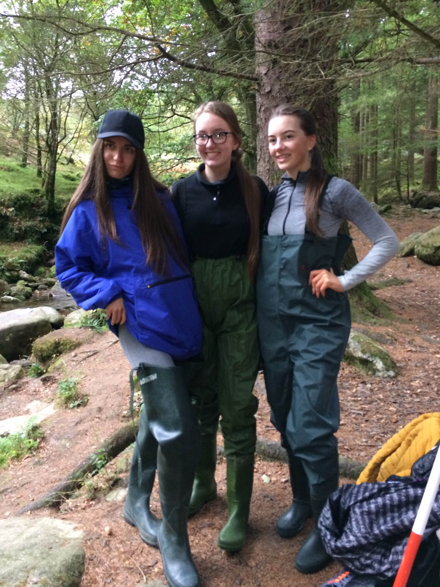
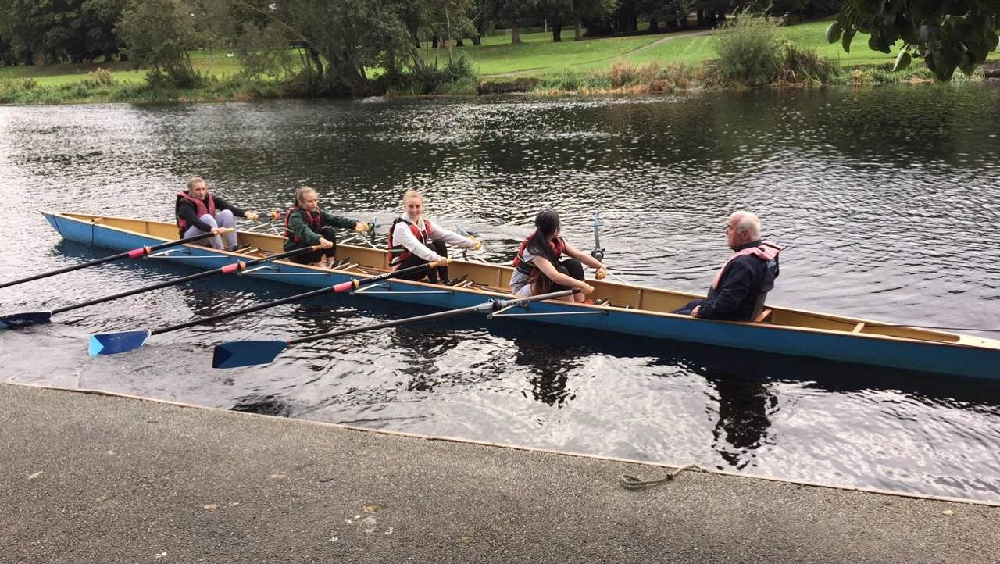
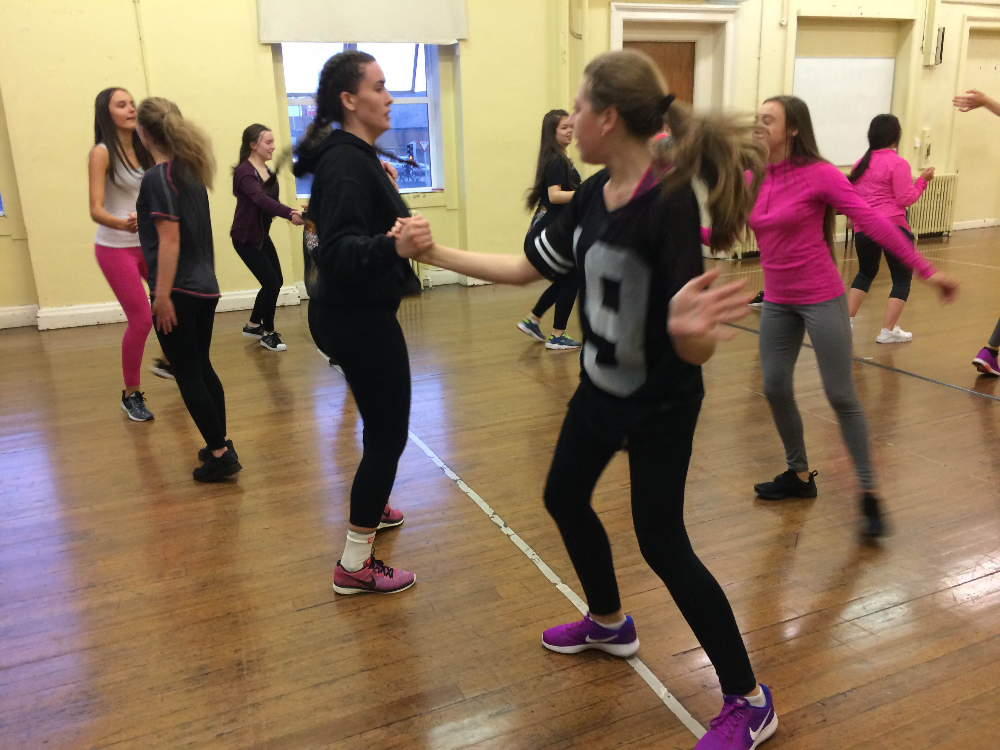

Loreto College Crumlin - TY Newsletter 2016-2017
Hey! Welcome to the Loreto College Crumlin TY Newsletter. What is TY? TY is a one year programme after your Junior Cycle filled with opportunities to have new experiences and develop new skills. Doing this through work experiences, musicals and TY Trips. Here, we can keep you up to date on your upcoming trips, read blog posts from your fellow students, or comment some suggestions on what you think we should do next in TY!
Issues
TY Gallery


